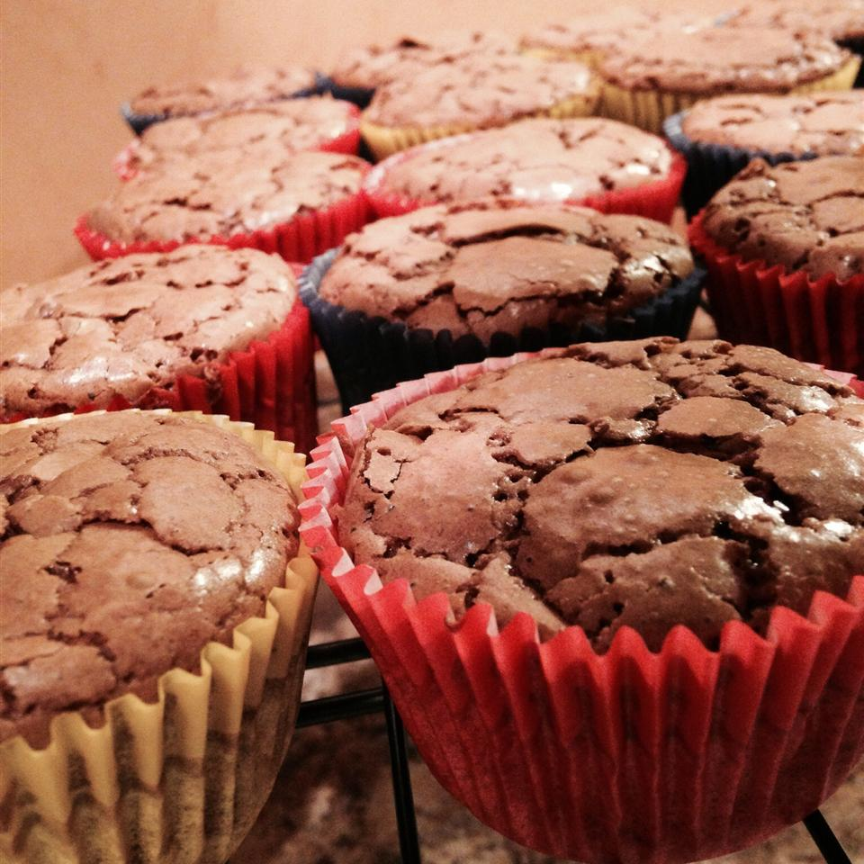

Brownie Cupcake Recipe

Description
Grandma Page's brownie cupcakes!
This recipe takes 15 minutes to prep and 35 minutes to cook.
It yields 18 cupcakes.
Ingredients
- 1 cup butter
- 1 cup chocolate chips
- 4 eggs
- 3/2 cups white sugar
- 1 cup all-purpose flour
- 1 teaspoon vanilla extract
Steps
- Preheat oven to 165 degrees celsius. Line 18 cups with paper liners
- Melt butter and chocolate chips together in a saucepan over low heat,
stirring until smooth; let cool
- Beat eggs and sugar together in a mixing bowl until thoroughly
combined. Mix flour and vanilla extract into egg mixture. Fold in
chocolate mixture until batter is smooth.
Pour batter into prepared cupcake cups, filling them about 1/2 full.
- Bake in the preheated oven until a toothpick inserted into
the center of a cupcake comes out clean or with moist crumbs, about 30 minutes